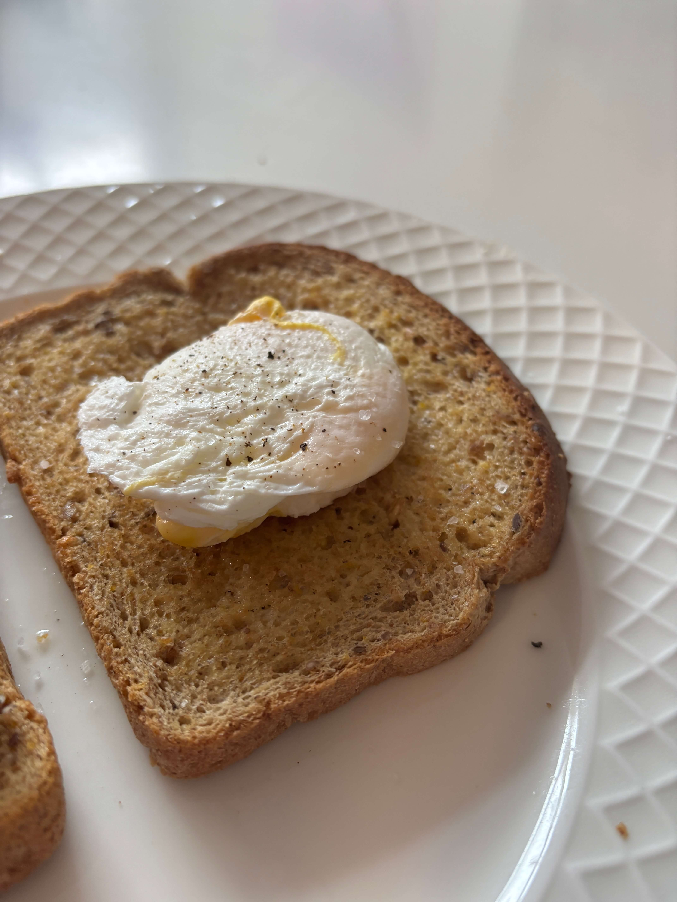

Home
Poached Egg

Ingredients
- White Vinegar
- 1 egg
- Salt and pepper
- Toast
Steps
- Bring a pot of water to a gentle boil (not a rolling boil)
- Add a little bit of white vinegar to the pot to keep the egg proteins strong
- Crack the egg into a small bowl
- Stir the pot of water to make a whirlpool and gently lower the egg into the whirlpool so the whites wrap around themselves
- Once the egg whites are no longer see through use a spoon to gently lift the egg from the bottom so that it doesn't stick
- Let the egg cook for a few min, you can tell if its done if the outside is bouncy to the touch and the insides are still liquid
- Serve on toast and season with salt and pepper